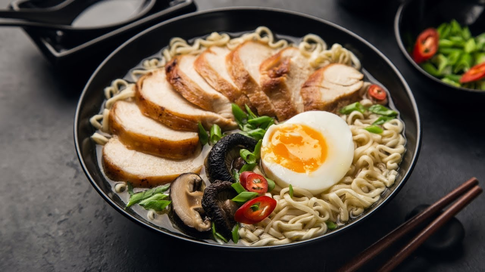

Japanese Ramen Guide for Beginners
Ramen (ラーメン) is a Japanese adaptation of the Chinese Lamian (拉麺). To call it “ramen,” it must consist of wheat noodles and soup. While there are several contested theories on how and when it originally arrived in Japan, ramen has always been cheap and filling, the food of champions for blue-collar workers.
Types of Ramen based on Broth Flavors, Noodles & Toppings
Ramen Broth Flavors
The 3 main broth flavors of ramen are Shio (塩), Shoyu (醤油), and Miso (味噌). These are also the
building blocks that ramen shops use to develop flavors. This is where shops become creative and
secret recipes are born. Ramen masters add their own ratio of umami-rich ingredients to the broth,
such as dried kelp or seafood, animal bones, charred vegetables, or aromatics.
Why no Tonkotsu (とんこつ) or Tori Paitan (鶏白湯)? They are broth bases, not flavors. Tonkotsu is
a pork bone broth. Tori Paitan is a chicken bone broth, seasoned with salt, soy sauce and other
seasonings, and simmered for hours with aromatics to extract the collagen from the bones.
Shio 塩ラーメン
Light colored to the point of almost translucent, shio ramen is the saltiest of them all and the lightest in terms of oil as it is boiled down to concentrate the flavor.
Shoyu 醤油ラーメン
Not just your table soy sauce, shoyu ramen is usually made from the shop’s blend of secret ingredients. Depending on what else is swirled into the broth, it could partake a clear brown color that’s light on the tongue or a dark cloudy color that’s dense and thick.
Miso 味噌ラーメン
The most umami-rich of the three ramens and also the heaviest, miso ramen has a bolder and more complex flavor. Miso ramen originates from the northern island of Hokkaido, but its popularity has spread across the country, where there are as many different miso ramen broths as there is miso (the paste).
Ramen Noodles
Those eggy yellow noodles consist of four ingredients: wheat flour, salt, water, and kansui (a type of alkaline mineral water).
While the vivid color may trick you into thinking eggs are involved, the color is due to the mineral composition of kansui. It comes in various shapes and lengths: thick, thin, wavy, straight. Some shops churn out their noodles in-house while others outsource their supply.
Ramen Toppings
A pizza without toppings is delicious on its own, but ramen without toppings is a lonely bowl of noodles! Ramen toppings range from blanched vegetables and seasonings to hearty cuts of meat and thick sauces, which are quickly topped right before serving.
Chashu チャーシュー
Different from the Chinese char siu, Japanese chashu (transliteration of char siu) omits the roasting and instead simmers the meat block for hours in a sweet soy sauce. Chashu is usually served sliced, but some places torch the meat until crispy and cut the meat into cubes.
Menma メンマ
Menma are lacto-fermented bamboo shoots, which are usually imported from China. Light brown in color, they are long brown strips with a texture between crunchy and fibrous.
Seaweed: Nori 海苔, Wakame わかめ
You may see sheets of nori in your bowl, slightly soggy by the time the bowl arrives in front of you. Wakame is another type of seaweed that’s most likely in miso or shio ramen.
Bean sprouts もやし
The bean sprouts in ramen are precooked, either blanched or stir-fried (unlike in Vietnamese pho where it is topped raw to be “cooked” in the hot broth). Not only does it bulk up the dish, but the crunchy texture is a palate cleanser between each bite of savory noodles.
Eggs 卵
Eggs are a must in a bowl of ramen, whether whole or sliced in half, seasoned or plain, soft-boiled or firm. Ajitsuke Tamago 味付け卵 (also known by its shortened name Ajitama 味玉) are marinated eggs in soy sauce and mirin. Hanjyuku Tamago 半熟卵 are soft boiled eggs. Both Ajitsuke Tamago and Hanjyuku Tamago are characterized by the custardy creamy yolks.
All images and content used in the site - Copyright
JustOneCookBook
https://www.justonecookbook.com/tags/ramen/